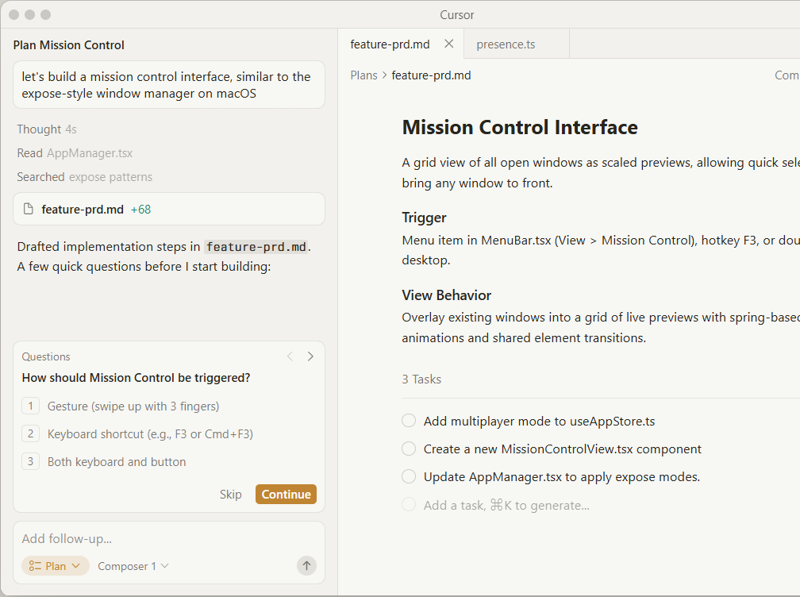
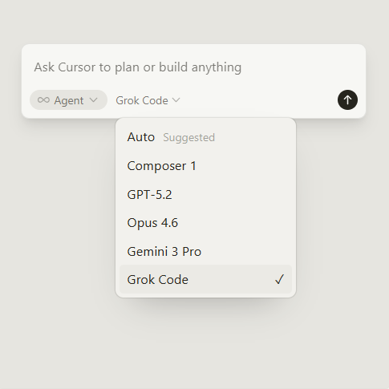

Built to make you extraordinarily productive,
Cursor is the best way to code with AI.
Cursor is the best way to code with AI.
Download for Windows ⤓

Trusted every day by teams that build world-class software
Accelerate development by handing
off to cursor,while you focuse on
making descission
→


Our specilized Tab model predicts
your next action with stricking
speed and precision
→
Cursor review your PRs in github
collaborator in slack , and run in
your terminal
→


“It was night and day from one batch to another, adoption went from single digits to over 80%. It just spread like wildfire, all the best builders were using Cursor.”
Diana Hu
General Partner, Y Combinator
“My favorite enterprise AI service is Cursor. Every one of our engineers, some 40,000, are now assisted by AI and our productivity has gone up incredibly.”

Jensen Huang
President & CEO, NVIDIA
“The best LLM applications have an autonomy slider: you control how much independence to give the AI. In Cursor, you can do Tab completion, Cmd+K for targeted edits, or you can let it rip with the full autonomy agentic version.”
Andrej Karpathy
CEO, Eureka Labs
“Cursor quickly grew from hundreds to thousands of extremely enthusiastic Stripe employees. We spend more on R&D and software creation than any other undertaking, and there's significant economic outcomes when making that process more efficient.”
Patrick Collison
Co‑Founder & CEO, Stripe
“The most useful AI tool that I currently pay for, hands down, is Cursor. It's fast, autocompletes when and where you need it to, handles brackets properly, sensible keyboard shortcuts, bring-your-own-model... everything is well put together.”
shadcn
Creator of shadcn/ui
“It's definitely becoming more fun to be a programmer. We are at the 1% of what's possible, and it's in interactive experiences like Cursor where models like GPT-5 shine brightest.”
Greg Brockman
President, OpenAI
Use the best model for every task
Choose between every cutting-edge model from OpenAI, Anthropic, Gemini, xAI, and Cursor.
Explore models ↗
Complete codebase understanding
Cursor learns how your codebase works, no matter the scale or complexity.
Learn about codebase indexing ↗
Develop enduring software
Trusted by over half of the Fortune 500 to accelerate development, securely and at scale.
Explore enterprise →
Subagents, Skills, and Image Generation
CLI Agent Modes and Cloud Handoff
New CLI Features and Improved CLI Performance
Layout Customization and Stability Improvements
Cursor is an applied research team focused on building the future of software development.
Join us →
Recent highlights
Introducing Cursor 2.0 and Composer
A new interface and our first coding model, both purpose-built for working with agents.
Product · Oct 29, 2025
Improving Cursor Tab with online RL
Our new Tab model makes 21% fewer suggestions while having 28% higher accept rate.
Research · Sep 12, 2025
1.5x faster MoE training with custom MXFP8 kernels
Achieving a 3.5x MoE layer speedup with a complete rebuild for Blackwell GPUs.
Research · Aug 29, 2025